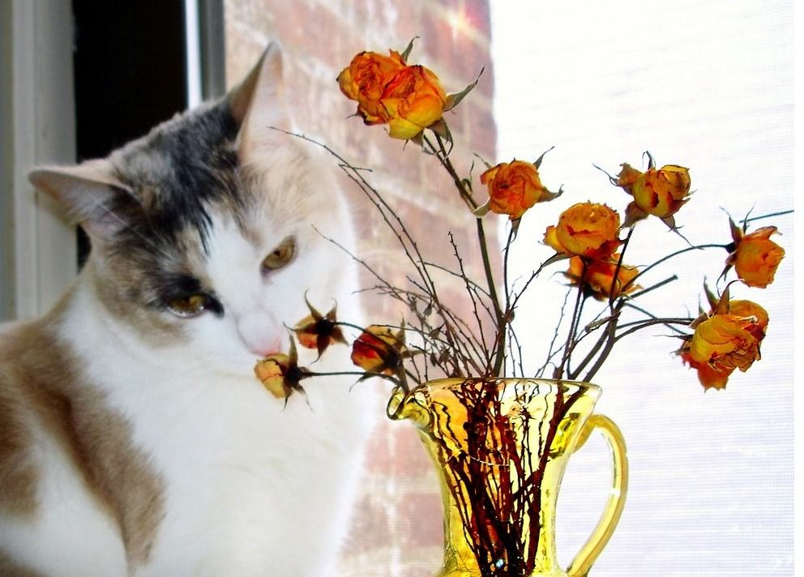
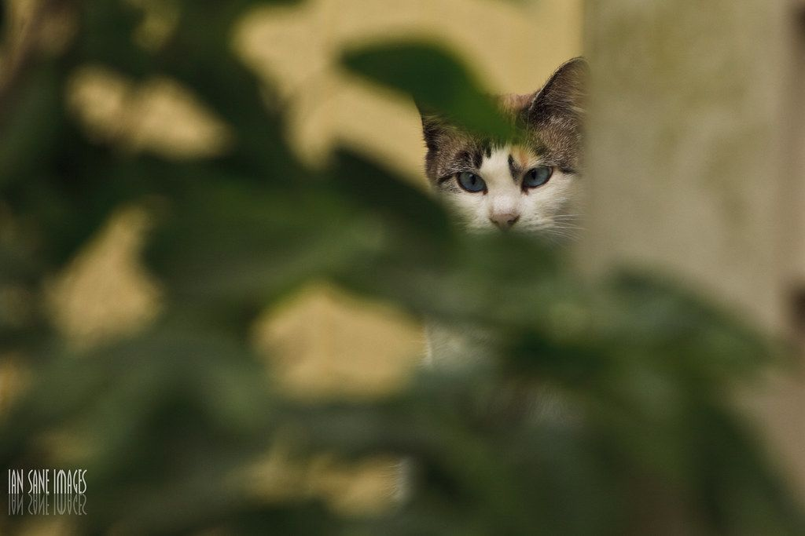
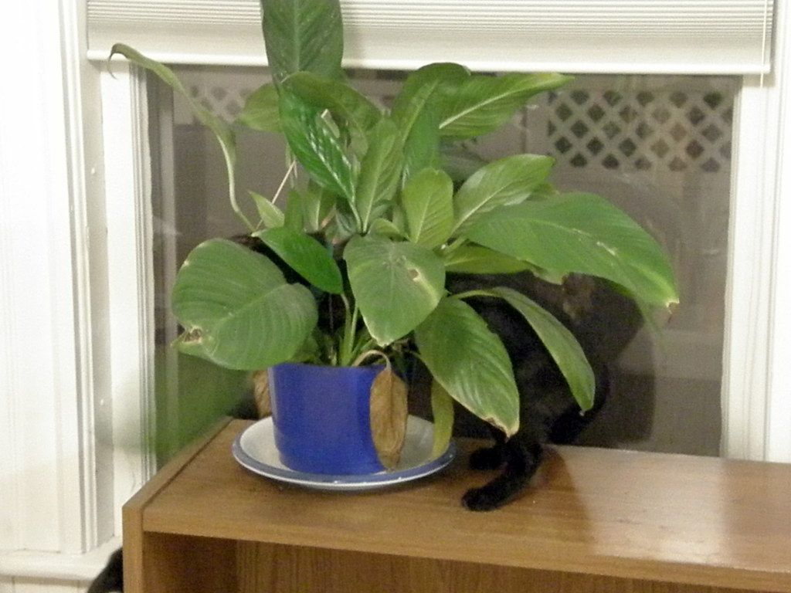

ブログ
猫に危ない年末年始の食べものと植物：おせち・もち・花の注意点
公開 2026-11-22・日本ねこ編集部
結論から言うと、年末年始のねぎ料理・もち・おせち・ユリの花はどれも猫にとって危険です。ねぎ類は少量でも貧血を起こします。ユリは花びらから花瓶の水まで全体が有毒です。もちは窒息の危険があります。猫が口にできない場所に置くことが一番の対策です。

写真：Violette79（CC BY 2.0）
年末年始は親戚が集まり、おせちやもちが並ぶ季節です。花を飾る家も増えます。にぎやかな分、猫にとって危ないものがいつもより身近に増える時期でもあります。
この記事では、特に注意したい食べものと植物をまとめました。もし口にしてしまったときの考え方も紹介します。数字や症状の出方には個体差があるので、気になる様子があれば自己判断せずかかりつけの動物病院に相談してください。
年末年始に増える危険な食べもの
ねぎ・ニラ・ニンニクの仲間
すき焼きや煮物でよく使うねぎ・長ねぎ・ニラ・ニンニクは、猫にとって代表的な危険食材です。原因となる成分は加熱しても壊れないとされ、煮汁やみそ汁に溶け出した分でも中毒を起こすことがあります。体内で赤血球が壊れる溶血性貧血を起こします。症状は血色尿や嘔吐・下痢・呼吸困難などです。食べた直後ではなく数日後に症状が出ることもあるとされているので、少しでも口にしたら数日は様子を見てあげてください。
年末年始は鍋やすき焼きの取り皿をテーブルに置きっぱなしにしがちです。猫が届く高さに置かないようにしましょう。
もち
もちは粘り気が強く、大きいまま飲み込むとのどに詰まりやすい食品です。消防のまとめでは、もちをのどに詰まらせて救急搬送される人は1月に最も多いとされています。搬送者の9割以上は65歳以上の高齢者です。これは人のデータですが、もちの粘着性そのものは猫にとっても同じようにのどや消化管をふさぐ危険があります。鏡餅や雑煮のもちは猫の届かない場所に置いてください。
おせちの濃い味つけ
数の子や黒豆・伊達巻などのおせち料理は、人向けにしっかり味がついています。塩分や糖分の多い味つけは猫の体には合いません。栗や昆布など素材そのものでも、だしや調味料がしみた状態で与えるのは避けましょう。取り箸やお皿を床に置きっぱなしにしないことも大切です。

写真：Ian Sane（CC BY 2.0）
年末年始に増える危険な植物
ユリ（ユリ科の花全般）
お正月の花束や生け花によく使われるユリは、猫にとって特に危険な植物です。花びらや葉・花粉、さらに花を生けた花瓶の水にまで有毒な成分が含まれるとされています。初期症状は嘔吐やよだれ・食欲不振・元気消失で、摂取から数時間のうちに現れることが多いと紹介されています。治療は特効薬がなく、胃の洗浄や点滴などの対症療法が中心です。そのため重症化すると急性腎不全から命にかかわることもあります。猫がいる家にはユリそのものを置かないのが一番の対策です。
花粉が猫の毛につき、グルーミングで口に入ってしまうケースもあるとされています。花束をもらったときは、ユリが入っていないか確認してから部屋に置いてください。
そのほか気をつけたい植物
ユリ以外にも、ソテツやキョウチクトウ・チューリップの球根などが猫にとって危険な植物として紹介されています。お正月飾りで見かけるポインセチアは、毒性の強さについて海外の資料でも見解が分かれています。念のため猫の届かない場所に置くほうが安心です。

写真：Dan4th（CC BY 2.0）
| もの | 注意点 |
|---|
| ねぎ・ニラ・ニンニク | 加熱しても毒性は消えない。症状が数日後に出ることもある |
| もち | 粘り気が強くのどに詰まりやすい |
| おせち（数の子・黒豆など） | 塩分・糖分が多く猫には合わない |
| ユリ | 花・花粉・花瓶の水まで有毒。特に危険 |
| ソテツ・キョウチクトウ・チューリップの球根 | 猫にとって危険な植物として紹介されている |
もし口にしてしまったら
- まず落ち着いて、何をどれくらい口にしたか確認する。植物なら種類がわかる写真や現物を残しておくと診察に役立ちます。
- 吐かせようとしない。自己判断での処置はかえって危険な場合があります。
- かかりつけの動物病院にすぐ連絡する。診療時間外の場合は夜間救急の動物病院も確認しておきましょう。
- 年末年始は休診の病院が多い時期です。連絡先を事前にメモしておくと安心です。長期の外出準備については年末年始、猫の留守番は何日までOK？もあわせてご覧ください。
こんなときは動物病院へ
次のような様子が見られたら、自己判断で様子を見ず早めに動物病院へ相談してください。
- 嘔吐や下痢が続く
- よだれが多い、食欲がない
- 血の混じった尿やいつもと違う色の尿が出た
- ぐったりしている、呼びかけへの反応が鈍い
- ユリなど危険な植物に触れた・口にした可能性がある
症状が軽く見えても、ユリ中毒やねぎ類の中毒は時間差で重くなることがあります。心配なときは「念のため」で相談して大丈夫です。
まとめ
年末年始はテーブルや玄関に、いつもと違う食べものや花が増える季節です。ねぎ類・もち・ユリだけ覚えておけば、危険の多くは避けられます。家族や来客にも「猫がいるので食べものと花は気をつけて」と一言伝えておくと安心です。
猫のいたずら対策、みなさんはどうしていますか？Instagramで #JapanNeko をつけて教えてください。
参考にした情報
この記事は一般的な情報をまとめたものです。症状の出方や重症度には個体差があります。何かを口にした可能性があるときは自己判断で様子を見ず、かかりつけの動物病院にすぐ相談してください。
よくある質問
ねぎやニラを少し食べてしまったら？
ねぎ類は加熱しても毒性が消えないとされています。少量でも赤血球が壊れる溶血性貧血を起こすことがあり、症状がすぐに出ず数日後に血色尿や嘔吐が出る場合もあります。食べた量がわずかでも、かかりつけの動物病院に相談してください。
猫がユリの花に近づいただけでも危険ですか？
ユリ科の植物は花びらや葉だけでなく花粉や花瓶の水にも有害な成分が含まれるとされ、ごく少量の接触でも急性腎不全につながる例が紹介されています。グルーミングで毛についた花粉をなめてしまうこともあるため、猫がいる家にはユリを置かないのが安全です。
お正月のもちやおせちを少しだけあげてもいいですか？
もちは粘り気が強く、のどに詰まりやすい食品です。人でも高齢者の窒息事故が1月に多いと紹介されています。おせちの数の子や黒豆は味付けが濃いものが多く、猫の体には合いません。どちらも与えないのが安心です。
症状が出たらすぐ病院に行くべきですか？
ユリ中毒は初期症状が摂取から数時間で出て、重症化すると数十時間で急性腎不全に進むとされています。ねぎ類の症状は数日後に出ることもあります。どちらも自己判断で様子を見ず、食べた可能性があるものを伝えて早めに動物病院を受診してください。